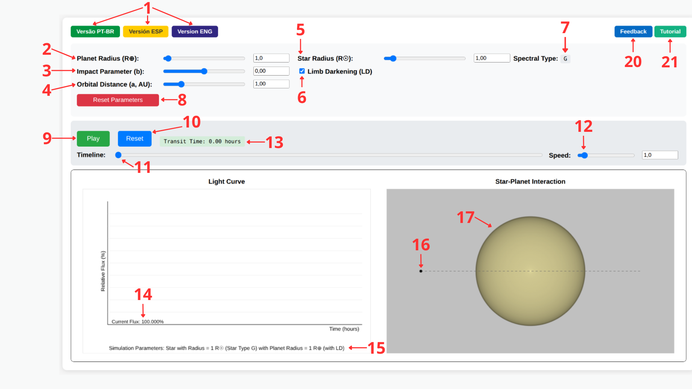
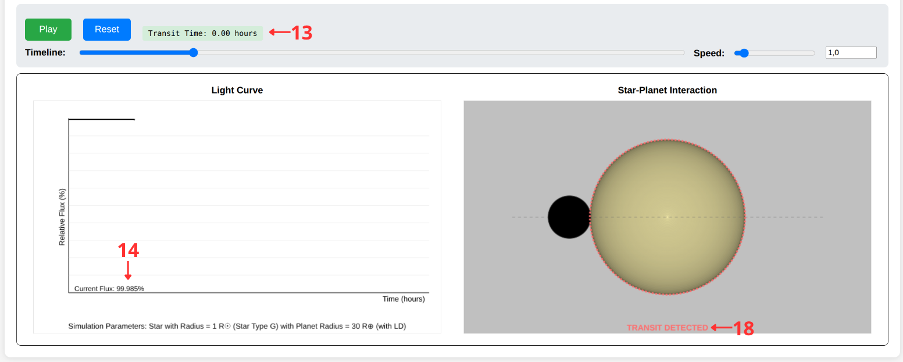
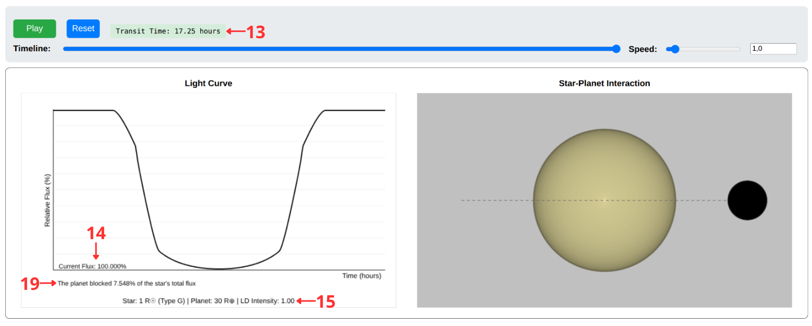

This guide explains how each control of the simulator works, the physics behind the calculations performed in real time, and suggests activities for classroom use. To access the tool, go back to the simulator.
Planetary transit is the most productive method for detecting exoplanets, accounting for approximately 75% of confirmed discoveries. It relies on observing the periodic decrease in a star's brightness caused by a planet passing in front of its disk.
Accurately interpreting this light curve requires accounting for limb darkening: the edges of the stellar disk emit less light than the center, due to the thermal structure of the photosphere. This effect rounds off the ingress and egress phases of the transit and is essential for correctly determining the planetary radius — far from being mere noise to be discarded.
This simulator allows you to manipulate, in real time, the physical and orbital parameters of an exoplanetary system and immediately observe their effects on the light curve, synchronizing the geometric representation of the transit with the resulting flux graph.
The interface is divided into a physical parameters panel and a dual visualization region, with each element numbered in the figure below. The following tables describe each of these numbers in detail.

| Control | Description |
|---|---|
| Planet Radius (R⊕) (2) | Sets the planet's radius in units of Earth radii, from 0.2 to 30 R⊕. The larger the planet relative to the star, the deeper the transit. |
| Star Radius (R☉) (5) | Sets the host star's radius in units of solar radii, from 0.2 to 10 R☉. As this value changes, the simulator automatically updates the displayed Spectral Type (7), following the Harvard Spectral Classification (O, B, A, F, G, K, M), along with the estimated mass and limb darkening coefficients. |
| Impact Parameter (b) (3) | Controls the projected distance between the center of the planet and the center of the star during the transit, ranging from −0.99 to 0.99. Values near zero represent central transits; values near ±1 represent grazing transits, close to the edge of the stellar disk. |
| Orbital Distance (a, AU) (4) | Sets the planet's semi-major axis in astronomical units. This value, together with the estimated stellar mass, determines the orbital period via Kepler's Third Law and, consequently, the transit duration. |
| Limb Darkening (6) | Adjust the limb-darkening intensity for the light curve calculation and the visual rendering of the star, varying it continuously from 0 (uniform disk) to 1 (full effect, according to Claret's law). Compare different values to visualize how the intensity of the effect gradually rounds off the ingress and egress phases.. |
| Reset Parameters (8) | Restores all controls to the reference values of an Earth–Sun system (R⊕ = 1, R☉ = 1, b = 0, a = 1 AU). |
At the top of the interface, the buttons (1) allow you to instantly switch the simulator's language between Portuguese, Spanish, and English.
| Control | Description |
|---|---|
| Start / Stop (9) | Starts or pauses the real-time transit animation. |
| Restart (10) | Restarts the animation from the first frame, without changing the physical parameters. |
| Transit Time (13) | Displays the elapsed time from the start of the transit (first contact) to the current instant, calculated from the total duration T₁₄ derived from the system's orbital physics. |
| Timeline (11) | Allows you to manually drag the animation position (scrubbing), stopping at any instant — for example, exactly at the moment of first contact — regardless of the playback state. |
| Speed (12) | Controls the animation playback speed. To the left, faster; to the right, slower. |
The left panel draws the light curve in real time, displaying the relative flux (%) as a function of time (hours), the instantaneous current flux (14), and — at the end of the animation — a summary of the simulation parameters (15). The right panel shows the star–planet interaction, with the planet (16) orbiting the host star (17) along a trajectory represented by a dotted line.
As soon as the planet touches the edge of the stellar disk, the simulator displays a visual alert reading "TRANSIT DETECTED" (18), signaling the start of the flux drop:

At the end of the animation, with the planet in egress, the light curve panel displays a report with the exact percentage of flux blocked by the transit (19):

The core of the simulator calculates the fraction of stellar flux blocked by the planet at each
instant, based on the projected distance z between the centers of the two disks
(normalized by the stellar radius) and the radius ratio p = Rp/R★.
The algorithm distinguishes three geometric regimes:
When limb-darkening is enabled, the geometric transit depth is weighted by the local intensity of the stellar surface, described by the quadratic law of Claret (2000):
where μ is the normalized radial coordinate on the stellar surface, and u₁,
u₂ are coefficients that depend on the star's spectral type. Cooler stars (types K and M)
have larger coefficients, indicating more pronounced limb darkening, than hotter stars (types O and B).
The animation's time scale is not arbitrary: the simulator derives the orbital period P
from Kepler's Third Law,
where the stellar mass M★ is estimated from the average value of the mass range
associated with the spectral class identified from the given radius. From P and the
orbital inclination derived from the impact parameter, the total transit duration (T₁₄) is calculated
and displayed dynamically during the animation.
Set up a system with R☉ = 1, R⊕ = 5, and b = 0. Run the animation with different limb-darkening values and then with a value of 0. Ask students to describe the difference in the shape of the light curve, especially during the ingress and egress phases.
Keeping the planet's radius fixed, change the stellar radius to obtain a G-type star (≈1 R☉) and then an M-type star (≈0.3 R☉). Compare the transit depth and the curvature of the light curve's base in both cases.
With the same radius parameters, vary the impact parameter from 0 to near 1. Observe how the shape of the light curve changes from a symmetric, deep profile to an asymmetric, shallow one, until the transit is no longer detected.
Keeping the other parameters fixed, compare the transit duration (T₁₄) for a = 0.1 AU and a = 1.0 AU. Relate the observed difference to Kepler's Third Law.
This is an exploratory and conceptual tool, not intended for quantitative observational analysis. The current version does not incorporate:
The complete physical foundation, the occultation algorithm, and the educational discussion of this simulator are described in the article published in the Revista Brasileira de Ensino de Física. The source code is available in the GitHub repository.